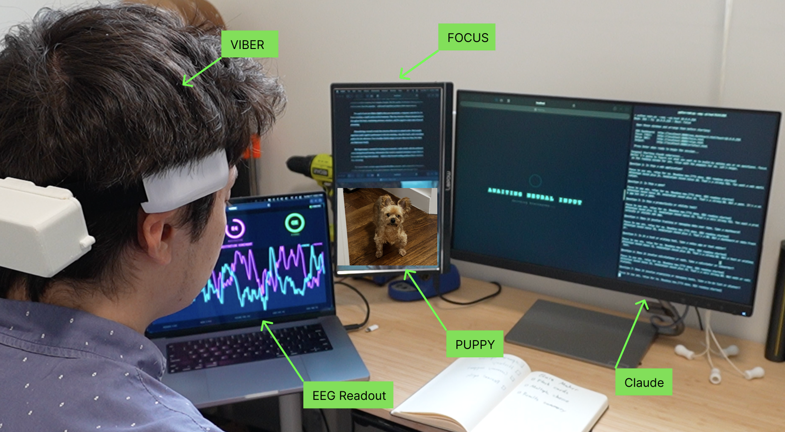

We present BRAINROT (Binary Response Architecture for INtent via Recursive Optimal Tree-search), the first system that generates arbitrary, complete, working software applications steered exclusively with brain interface technology. The system uses a consumer-grade single-channel EEG headset to capture binary yes/no decisions, which guide an LLM coding agent through an information-theoretically motivated questioning process. In two trials, the system produced a to-do list application (24 questions) and a flashcard application (27 questions), both fully functional. We also introduce PUPPY (Parasympathetic Unwinding Protocol for Psychophysiological Yielding), a novel BCI relaxation technique involving looking at pictures of dogs. We find that BRAINROT is an effective method of software generation, which raises questions about the role of the human in the modern development loop. Specifically, whether that role can be performed while looking at dog pictures.
